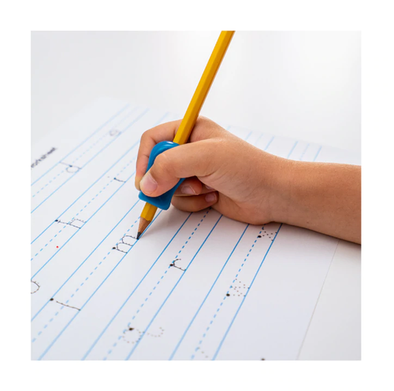
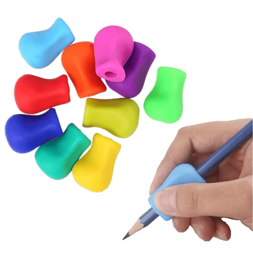
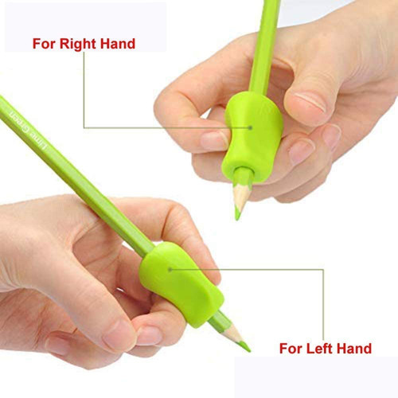
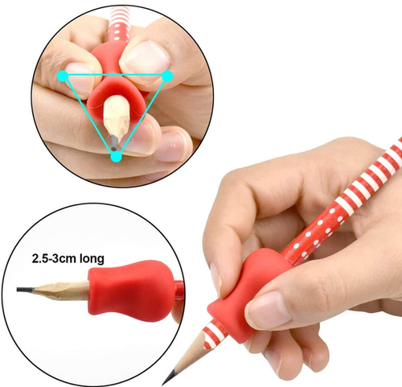
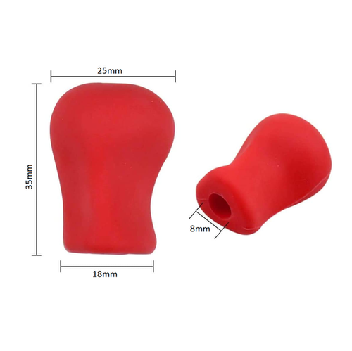
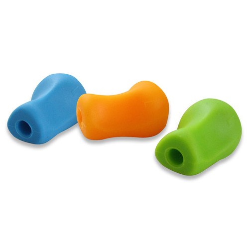

Pencil Grips
Arts and Crafts
R60Our Pencil Grips are an ergonomic writing aid. Writing becomes easy and natural. The Pencil Grip feels natural because of its ergonomic design and soft, flexible, latex-free material.The unique design gently encourages the fingers and hand to rest in the proper position for gripping – The Tripod Grip.The Pencil Grip improves handwriting, helps to give more control, and reduces hand fatigue.Suitable for both left and right-handers.Sold in sets of 3 pieces in assorted colours.
Enquire about this product




Pencil Grips at Kids Corner KZN
Pencil Grips is part of our Arts and Crafts collection. Kids Corner KZN stocks toys for learning, pretend play, creative play, gifting and everyday childhood discovery in South Africa.
Browse more Arts and Crafts toys